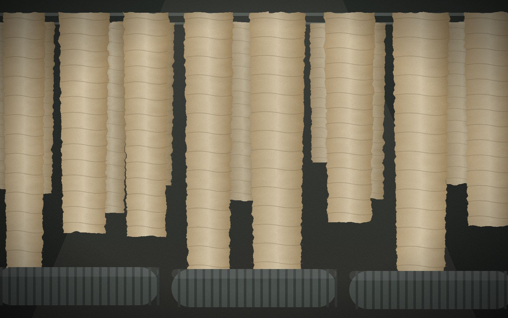
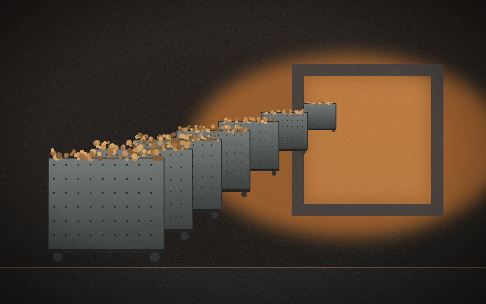
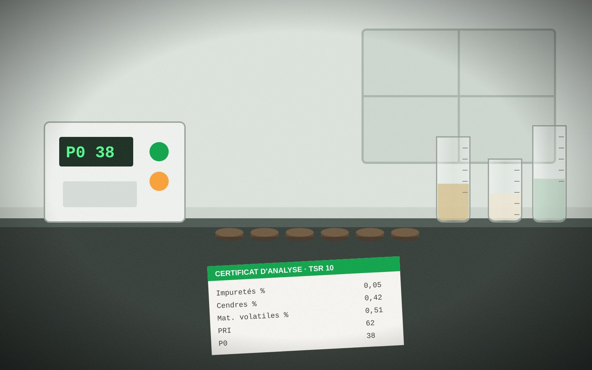
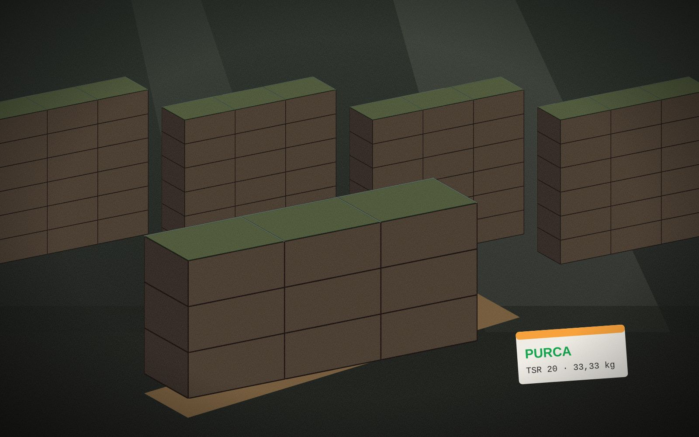

01
Bassins & pré-broyeur
Trempage et réduction du coagulum.
Quatre étapes maîtrisées dans notre usine pour un caoutchouc propre, régulier et certifié lot par lot.
Fonds de tasse, sernambi et coagulum des planteurs sont pesés, contrôlés en humidité et triés par qualité. Les lots les plus propres sont orientés vers le TSR10. Ils trempent ensuite en bassin pour libérer sable et écorces.

Des cuves d'agitation et un broyeur à marteaux éliminent les impuretés. Trois à six crêpeuses à cylindres rainurés, sous aspersion d'eau, transforment ensuite le caoutchouc en feuilles de crêpe. Le TSR10 reçoit plus de passages.

Le crêpe est réduit en granulés, transportés par eau jusqu'aux caissons perforés. Le séchoir à air chaud les sèche à 110–125 °C pendant 3 à 4 heures. La température est contrôlée pour préserver la plasticité du caoutchouc (PRI).

Le caoutchouc est pressé en balles de 33,33 kg, passé au détecteur de métaux, filmé et mis en palette. Des échantillons de chaque lot sont analysés au laboratoire : le résultat fixe le grade et figure sur le certificat d'analyse.
Trempage et réduction du coagulum.
Lavage et formation des crêpes.
Séchage contrôlé des granulés.

Balles de 33,33 kg filmées et palettisées.
Indiquez le grade, le volume et la destination : nous vous répondons avec une offre et la fiche technique.
Demander un devis